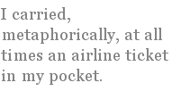

John Milbury-Steen
Do Not
In villages, do not throw coins or food.
Keep your ham and cheese for your own lunch.
Keep some extra change on hand to close
the eyes of the dead, so they don’t stare you down.
Keep your granola and your trail mix nuts.
Bring some cakes for the three-headed dog.
Never help the man who’s turning blue
pick up the piles of firewood that drops
from his rickety cart. Remark it and go
or take a photo and go. Do not rescue
the man who’s drowning in the white whirlpool.
He lures you into the suck of his going down.
Bid your pilot guide of the motorboat
quickly chug on to the hippos’ town.
Do not admire the monkey bridge, so long
and made of woven vines of cable cords,
which, to weave in a single night, the locals
swear they changed their persons into birds.
Beware the pomegranate and the girls
fresh out of bush school, singing and showing off
their breasts and melodies. Neither look
nor listen. They have changed the old despair
over the gate into a banner affair,
announcing, “BAND HOP ENTER HERE.”
Do not admire the coda to their song,
when they clap out a counterpoint like Bach.
Avoid those lips, which even when you look,
captivated (captive), enthralled (in thrall),
you kiss with earnest eyes. Do not fall.
You will have gotten localized by love.
Do not touch. Assume that every surface
has a patina of tar-baby hold.
Remember you’re a tourist. You only want
to see the points of interest and get out.
Remember you are building a slideshow.
Remember while you still can cast a shadow.
Down
The American contingent living down
in places where contingency is strong,
where suffering is spicy, good and hot,
sends letters home boasting, boosting the count
of decorative mosquito bites it bears
at camp where children rough it in the woods.
I still play with the down and down-a-down.
In every line I orchestrate the vowels
by artifice contingency to fall
from bright to dark, and from the see to saw,
into the past irregular ablaut
backer in the mouth as life doth drawl.
We theologians of our life must solve
our double nature, heavenly and earthly,
American and African, and come
down to the lowly Bandi manger straw,
as down third-worldly as our bent can go,
if any god can condescend that low.
Then would the bright above in poor among
have any ministry when struck with yaws?
Finally we understand why God
did not come down into a jungle home.
The soul’s salvation there was only food.
He waited for history to make a Rome.
He waited for empire and the Roman roads
for Paul to journey on, for a common tongue,
in short, for history to make the most
extensive place the free-est of place yet known.
There the Word appropriately occurred.
The Word takes Place or else Place takes the Word.
Noli Me Tangere
Never arrived, but in a lounge, en route,
I have lived my whole life in an airport.
The change in my pocket, those East Jangling Tubits,
each with an elephant among bamboos,
is just contextual money, is no good
except for buying chocolate or booze.
I’m waiting for my flight away, not to.
I’m waiting to ascend. Above is all.
I do not like to fall. Then take a hint:
touch me not! Taking my hand would hurt,
would nail me down to earth and I could not
bear the stigma of your fingerprint.
Incarnation
The poet ex-pat experience often brings to mind American intellectuals discussing aesthetics in sidewalk cafés in Paris. My extended stay as an American in a foreign country was nothing like that. It had nothing of the privileged leisure that ex-pat connotes. Nor did I ever have the conviction that I had chosen that country in preference to the U.S. as an expatriate ex-patriot. Nor was I, at the time, a poet. I was a Peace Corps volunteer in Liberia, West Africa from 1968 to 1972.
I taught classes in a primary school in the Episcopal mission town of Bolahun. It was a comparatively prosperous village. Most of the huts had tin roofs, not thatch. Most of the people had radios. Many of the farmers, in addition to having a rice farm in a swamp, also had plantings of coffee and cocoa. The town had a large Episcopal mission run by the Order of the Holy Cross, complete with a clinic, a monastery, a nunnery, a generator, a 12-grade school and a church that dominated the village the way a cathedral dominates a medieval town — a towering edifice in a town so poor the local offering could not pay for the altar wine.
On the other hand, I saw people suffering from yaws, malaria, running sores on their legs, worms, elephantiasis, and,of course, hunger, especially during the time when the rice was ripening and the old stores of rice were exhausted. The experience taught me what contingency means. In Latin it means “being touched together,” the way fate and circumstance touch us: in the West, lightly until old age; in the third world like being hit with a two by four between the eyes from birth on. For me it invoked a pair of contradictory responses — involvement and withdrawal.
I was very involved. I worked very hard as a teacher. I learned the local language, Bandi. I organized the building of a new school. I became, as many Peace Corps volunteers become, the de facto principal of a school — at the age of 22! However, the degree of suffering all around me was pitiful. While I was trekking in the jungle, a man once approached me, knelt before me and touched my foot, begging for medicine, thinking that I was a doctor. I always knew I was not stuck there for good. I carried, metaphorically, at all times an airline ticket in my pocket. The temporary nature of my stay there was a definite consolation.
For me, this was, ultimately, a poisonous consolation. It is a defense mechanism, in Jungian terms, an archetype, useful but alienating, to know that one has wings and can fly away from a place in which he is stuck. Having wings (the airline ticket) means that one does not take root there, has no sense of commitment to a place or to people in that place, that the women in that place are temptresses trying to imprison one there, that one has a sense of superiority to the others stuck there, that one regards one’s life there as a temporary adventure, a tourist visit.
This was an ironic discovery for me, since, as a child born into the wrong family (a meditative child born into a fundamentalist Baptist family) I had always felt stuck. I coped by carrying in my pocket the cheapest, most easily available airplane ticket of all — the imagination. I could console myself that if I lived in that house or sat in that church, I did so temporarily and superficially. It was just an anthropological expedition to the Baptist tribe, and I could return to my home base, the university, at any time. The Peace Corps was supposed to have been my escape to a real place where I could actually be involved, but the intensity of the poverty and suffering made it even a worse place in which to be stuck and pumped me with even more helium.
This amounts to a life-long quarrel I have had with incarnation. In Latin, this literally means “becoming meat.” I am meat, I do admit it, but there is also a transcendent part of me which always lives above the place in which I feel stuck. Theologically, this problem is applied to Christ alone as the debate over His dual nature, but I take the whole debate as a disguised one about the dual nature of every person. To incarnate completely is to become meat — one of those three hundred pound Americans stuffing himself at an all-you-can-eat restaurant — also stuffing himself with TV, movies and other forms of sugar and fat. However, to refuse to incarnate at all is also a great tragedy, since we are meant to incarnate, just as our genes have programmed us to walk on two legs. To incarnate means to say “I am here and with you and where I am and who am I with allows me to become what I am.”
As I look back on my Peace Corps poems, I see that they have taken on the pose of what Jung calls the puer aeternus, the eternal child, refusing to grow up (grown down into the earth). Several of these poems are so unsure of themselves that they present this adjustment as a recommendation. In others I see more outright ambiguity.
Incidentally, even the prosody of the poems is meant to echo the experience. Each line moves from front vowels (bright, transcendent) to back vowels (darker, more haunting) as a continual fall of brightness that cannot possibly be avoided.
John Milbury-Steen Served in the Peace Corps in Liberia, West Africa. Did a Master's in Creative Writing with Ruth Stone at Indiana University, Bloomington, Indiana. Worked as an artificial intelligence programmer in Computer Based Education at the University of Delaware. Currently teaches English as a Second Language at Temple University, Philadelphia. His poetry has been published in The Beloit Poetry Journal, Hellas, The Blue Unicorn, Kayak, The Listening Eye, The Neovictorian/Cochlea, The Piedmont Literary Review, Scholia Satyrica and Shenandoah.
|